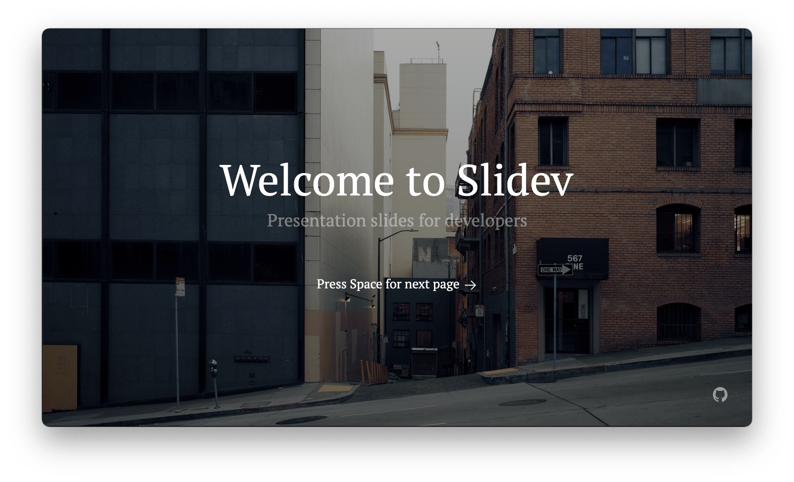

slidev 简介

Presentation slides for developers 🧑💻👩💻👨💻

以下是 Slidev 的一些最酷的功能:
支持 Markdown 语法
Slidev 使用一种扩展的 Markdown 格式，在一个纯文本文件中存储和组织你的幻灯片。这让你专注于制作内容。而且由于内容和样式是分开的，这也使得在不同的主题之间切换变得更加容易。
可定制主题
Slidev 的主题可以通过 npm 包的形式来分享和安装。你只需要使用一行配置就可以应用它们。
对开发者友好
Slidev 为开发者提供了一流的代码片段支持。它同时支持 Prism 和 Shiki 以获得像素级的完美语法高亮，并且能够随时修改代码。通过内置的 Monaco 编辑器，它还能让你在演示文稿中进行现场编码/演示，并支持自动补全、类型悬停、甚至是 TypeScript 类型检查。
快速
Slidev 得益于 Vite，Vue 3 和 Windi CSS，为你带来了最美妙的创作体验。你所做的每一个改变都会立即反映到你的幻灯片上。
互动性 & 直观表达
你可以编写自定义的 Vue 组件并直接在你的 MarkDown 文件中使用它们。你也可以在演示文稿中与它们互动，以更深入和直观的方式表达你的想法。
支持录制
Slidev 提供了内置的录音和摄像头视图。你可以将你的演示文稿与你的相机视图一起分享，或者为你的屏幕和相机分别录制并保存。所有这些都是内置的，不需要额外的工具。
可移植性
用一个命令就可以将你的幻灯片导出为 PDF 或 PNG，甚至是可托管的单页应用程序（SPA），并在任何地方分享它们。
可配置
由于 Slidev 基于 Web 技术，任何可以在 Web 应用中完成的事情，Slidev 也可以做到。例如，WebGL、API请求、iframes，甚至是实时共享。完全取决于你的想象力!
即刻体验
开始一个 Slidev 项目无需长篇大论。只需要一个命令即可:
npm init slidev